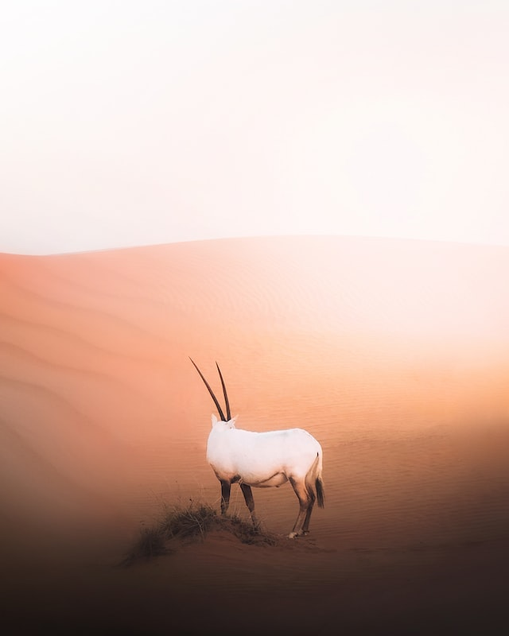
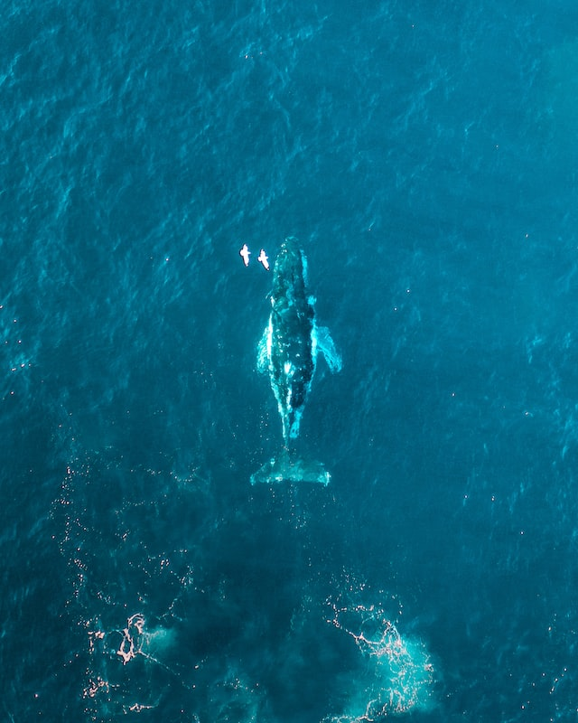
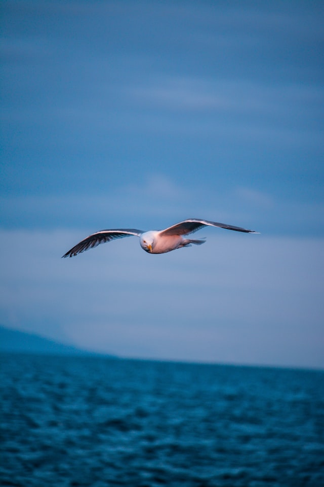
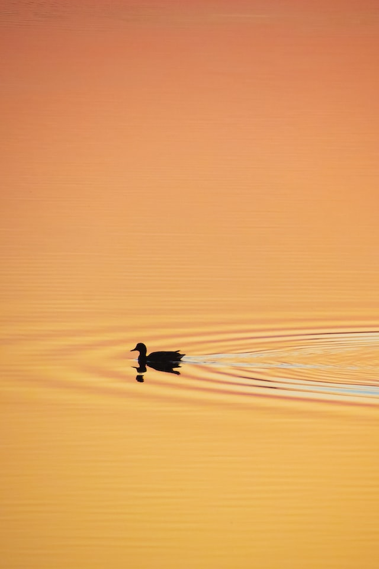
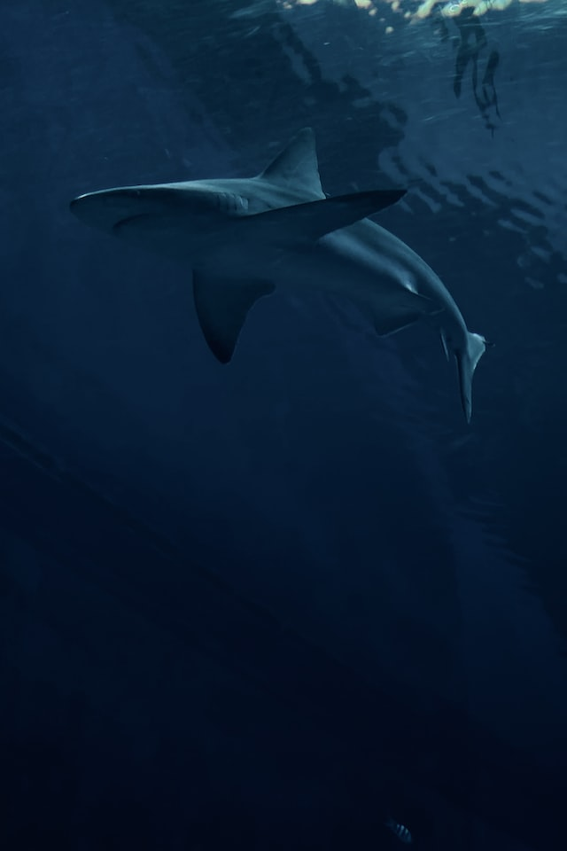
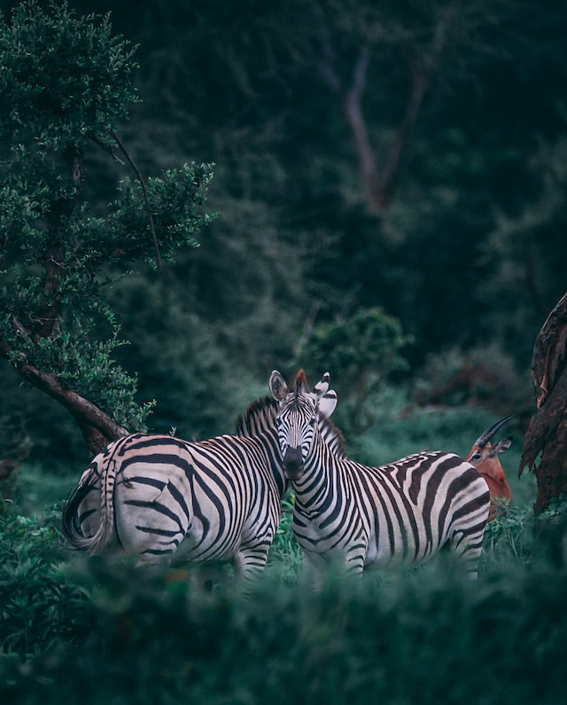

Animais Fantásticos
- 
- 
- 

- 
- 
- 
Antílope
Mamíferos ungulados da família dos Bovídeos a que pertencem animais esbeltos, de cornos espiralados e cauda curta. São de porte médio entre os 60 e os 100 centímetros de altura no garrote.
São habitantes das savanas e dos desertos, próprios do continente africano. São seres territoriais e gregários, têm bem desenvolvidos os sentidos da visão e da audição. Os hábitos alimentares são exclusivamente vegetarianos. Relativamente ao comportamento reprodutor dos antílopes, que reúnem rebanhos de fêmeas mais numerosos do que o de qualquer outro ruminante africano, as fêmeas grávidas formam, em geral, grupos mais ou menos compactos ou conservam-se afastadas. No seu período de gestação de cento e oitenta a duzentos dias, separam-se completamente e dão à luz ocultas entre os arbustos.
Baleia
Designação de mamíferos cetáceos com barbas, da família dos Balenopterídeos. É um nome, por vezes, impropriamente aplicado a cetáceos com dentes, os quais geralmente deverão ser designados por cachalotes. São exemplo de baleias, a baleia-cinzenta-da-Califórnia que pode atingir os 16 metros de comprimento, a baleia-azul (Blaenoptera musculus) cujo comprimento pode atingir os 33 metros e a baleia-branca que pode atingir o comprimento de 24 metros.
Nestas espécies só os organismos jovens apresentam dentes vestigiais que nunca se desenvolvem. As baleias, que são organismos enormes, alimentam-se de seres planctónicos que capturam com a água que é filtrada com a ajuda das barbas flexíveis, implantadas nas maxilas. As barbas no seu rebordo interno apresentam numerosos pelos modificados que retêm as pequenas presas enquanto a água é expelida.
Gaivota
Designação de aves que se incluem na família dos Larídeos. A gaivota (Larus argentatus), também conhecida por gaivota-argêntea ou gaivota-prateada-grande, tem o comprimento de 63 centímetros e uma envergadura de 123 a 148 centímetros. O corpo é forte, a cauda curta e as asas pontiagudas e grandes. O bico é robusto e ligeiramente curvado em gancho. Os três dedos anteriores estão unidos por uma membrana e o dedo posterior é muito pequeno. Os adultos têm a plumagem de cor cinzenta. O regime alimentar das gaivotas é extraordinariamente oportunista e muito variado. Embora possam ser hábeis pescadoras incluem na sua alimentação, além de peixes, cadáveres e desperdícios de todos os tipos, tanto de origem animal como vegetal.
O seu habitat é junto à costa ou lagos interiores, mas é também encontrada em cidades e vilas costeiras, portos e lixeiras. O ninho, em forma de taça, pouco fundo, é um simples monte de ervas ou algas secas que no caso desta espécie de gaivota é construído no chão.
Papa-Mosca Vermelhão
O príncipe é uma ave passeriforme da família Tyrannidae. Na região pantaneira recebe o nome comum de barão-do-melgaço e indica a chegada próximo à festa de São João, no final de junho, quando é mais notado. No interior de São Paulo costuma aparecer normalmente no mês de maio ou pouco antes, se o outono tiver temperaturas mais amenas. Pode ser chamado ainda no município de Barão de Melgaço, assim como na maior parte do Pantanal (Poconé, Cáceres), como são-joãozinho. É popularmente denominado de sangue-de-boi no sul do Brasil e em Mato Grosso, assim como verão no extremo sul do Brasil, indicando a chegada, por lá, no período em que o tempo esquenta. Também é conhecido como papa-moscas-vermelho, mãe-do-sol (interior de São Paulo) e coração-de-boi em algumas cidades de Minas Gerais.
Pato
Pato é o nome comum para numerosas espécies de aves aquáticas pertencentes à família Anatidae. Os patos são menores e de pescoço mais curto que os cisnes e gansos, que são os membros da mesma família. São divididos em muitas subfamílias, sendo principalmente aves aquáticas que podem ser encontradas tanto em ambientes com água doce quando com água salgada.
Os patos alimentam-se de vegetação aquática, moluscos e pequenos invertebrados e algumas espécies são aves migratórias. Podem-se identificar os machos principalmente pela coloração diferente mais vistosa (visto que a grande maioria das espécies de patos tem dimorfismo sexual), e também por diferenças comportamentais. Algumas espécies de patos (quer selvagens, quer domesticadas ou criadas em cativeiro) são utilizadas pelo homem na alimentação, vestuário (as penas) e para entretenimento (caça). O pato é um dos poucos animais da natureza que anda, nada e voa com razoável competência. Também é um dos animais que conseguem dormir com metade do cérebro e manter a outra em alerta. É dotado de perfeito senso de direção e comunidade.
Tubarão
Tubarão ou cação é um tipo de peixe de esqueleto cartilaginoso e um corpo hidrodinâmico (com exceção dos Squatiniformes, Hexanchiformes e Orectolobiformes) pertencente à superordem Selachimorpha. Os primeiros tubarões conhecidos viveram há aproximadamente 400 milhões de anos.
Os tubarões se diversificaram em aproximadamente 440 espécies (no Brasil são conhecidas 88), variando em tamanho desde o menor, o tubarão-lanterna anão, Etmopterus perryi, uma espécie de no máximo 21 centímetros de comprimento, ao tubarão-baleia, Rhincodon typus, o maior, que atinge cerca de 12 metros e que se alimenta por filtragem apenas de plâncton, lulas e pequenos peixes. Os tubarões são encontrados em todos os mares e são comuns em profundidades até 2 000 metros.
Zebra
As zebras são mamíferos que pertencem à família dos cavalos, os equídeos, nativos da África central e do sul. A pelagem deste animal consiste num conjunto de listras contrastantes de cor, com o seu corpo todo branco e algumas listras pretas, dispostas na vertical, exceptuando nas patas, onde se encontram na horizontal. São geralmente animais sociais que vivem desde pequenos haréns a grandes manadas. Ao contrário de seus parentes mais próximos, cavalos e burros, zebras nunca foram verdadeiramente domesticadas.
É nas savanas africanas onde as zebras habitam. Encontram-se distribuídas por famílias: macho, fêmeas e filhotes. Estes animais, por serem atacados habitualmente por leões, podem se tornar animais extremamente velozes, pois para fugirem dos predadores, utilizam a fuga e seus fortes coices, podendo quebrar até a mandíbula de um felino. As listras das zebras vão escurecendo com a idade, e estes animais, embora se pareçam, não são todos iguais.
FAQ
- Qual a idade dos animais?
- O seu habitat é junto à costa ou lagos interiores, mas é também encontrada em cidades e vilas costeiras, portos e lixeiras. O ninho, em forma de taça, pouco fundo, é um simples monte de ervas ou algas secas que no caso desta espécie de gaivota é construído no chão.
- Eles são fantásticos?
- O seu habitat é junto à costa ou lagos interiores, mas é também encontrada em cidades e vilas costeiras, portos e lixeiras. O ninho, em forma de taça, pouco fundo, é um simples monte de ervas ou algas secas que no caso desta espécie de gaivota é construído no chão.
- Qual a diferença?
- O seu habitat é junto à costa ou lagos interiores, mas é também encontrada em cidades e vilas costeiras, portos e lixeiras. O ninho, em forma de taça, pouco fundo, é um simples monte de ervas ou algas secas que no caso desta espécie de gaivota é construído no chão.
- Como proteger?
- O seu habitat é junto à costa ou lagos interiores, mas é também encontrada em cidades e vilas costeiras, portos e lixeiras. O ninho, em forma de taça, pouco fundo, é um simples monte de ervas ou algas secas que no caso desta espécie de gaivota é construído no chão.
Contato

- af@contato.com.br
- +55 (47) 9 9154-6871
- Rua do Conde, nº 599
- São Paulo - SP